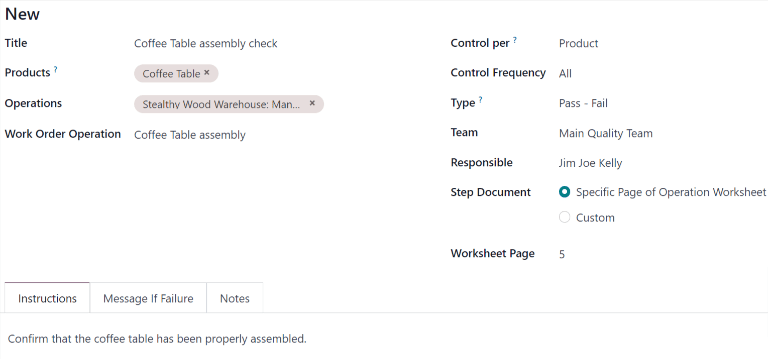

Quality control points¶
In Odoo, quality control points (QCPs), are used to automatically create quality checks at predetermined intervals. QCPs can be configured to create quality checks for specific operations (manufacturing, delivery, etc.), as well as specific products within those operations.
Using QCPs allows quality teams to ensure products are being regularly inspected for defects and other issues.
Configure quality control points¶
To create a new QCP, navigate to , and then click New.
Begin filling out the new QCP by entering a unique Title that makes the QCP easily identifiable.
In the Products field, select one or more products the QCP should apply to. If the QCP should apply to an entire product category, select it in the Product Categories field.
In the Operations field, select the operation(s) that should trigger the QCP. For example, selecting the Manufacturing option in the Operations field causes a quality check to be created for new manufacturing orders (MOs).
Note
When creating a new QCP, at least one operation must be listed in the Operations field. However, the Products and Product Categories fields can be left blank. If they are left blank, the QCP generates quality checks for every instance of the specified operation(s).
If the Manufacturing operation is selected in the Operations field, a new field appears below it, titled Work Order Operation. From this field, select a specific work order to generate quality checks for that operation, rather than the manufacturing operation in general.
For example, a QCP could be configured to create quality checks for the Assembly work order of
the Coffee Table product. Then, if a new MO is confirmed for a Coffee Table, the QCP creates
a quality check specifically for the Assembly operation.
The Control Per field is set to one of three options that determine when a new quality check is created:
Operation: one check is requested for the specified operation, as a whole.
Product: one check is requested for each unique product included in the specified operation. For example, a delivery operation for one table and four chairs would generate two checks, since two unique products are included in the operation.
Quantity: a check is requested for a certain percentage of items within the specified operation. This percentage is set by enabling the Partial Transfer Test checkbox, and then entering a numerical value in the Percentage field that appears below. If the checkbox is not enabled, one quality check is created for the full quantity.
The Control Frequency field is set to one of three options that determine how often a new quality check is created:
All: a quality check is requested every time the conditions of the QCP are met.
Randomly: a quality check is randomly requested for a certain percentage of operations, which can be specified in the Every #% of Transfers field that appears below.
Periodically: a quality check is requested once every set period of time, which is specified by entering a numerical value in the field below, and choosing either Days, Weeks, or Months as the desired time interval.
In the Type field, specify the type of quality check that should be performed. The method for processing quality checks created by the QCP depends upon the type of quality check selected:
Instructions checks provide specific instructions for how to complete the quality check.
Take a Picture checks require a picture of the product be uploaded for later review by the assigned quality team.
Register Production checks prompt manufacturing employees to confirm the quantity of the product that was produced during the manufacturing operation.
Pass - Fail checks specify a criterion that products must meet for the check to pass.
Measure checks prompt employees to record a measurement of the product that must be within a tolerance of a norm value for the check to pass.
Worksheet checks provide an interactive worksheet that must be filled out by the employee processing the check.
Important
An Instructions check is the same as a step on a work order for an MO.
When a step is added to a work order, Odoo stores it in the Quality app as a QCP. It is possible to manually create a QCP with the Instructions check type, and even assign it to an operation other than manufacturing, like receipts.
However, when creating a control point specifically for quality control purposes, using a different check type is probably more effective.
In the Team field, specify the quality team that is responsible for managing the QCP, and the quality checks it creates. If a specific quality team member is responsible for the QCP, select them in the Responsible field.
The Step Document field has two options that specify the location of an instructional document detailing how to complete the quality checks created by the QCP.
Select Specific Page of Operation Worksheet if the document is included with the instructional worksheet for the work order, then enter the page number in the Worksheet Page field that appears below.
Select Custom if the document should be included in the Instructions tab at the bottom of the QCP.
In the Instructions tab at the bottom of the form, enter instructions for how to complete the quality checks created by the QCP.
If the Custom option was selected in the Step Document field above, a document can be attached in this tab. To do so, either select the Upload your file button to open the device’s file manager, and then select a file, or add a link to a Google Slides document in the Google Slide Link field.
In the Message If Failure tab, include instructions for what to do if the quality check fails. For example, instruct the employee processing the quality check to create a quality alert.
The Notes tab is used to provide additional information about the QCP, like the reason it was created. The information entered in this tab is not shown to employees processing the quality checks created by the QCP.
